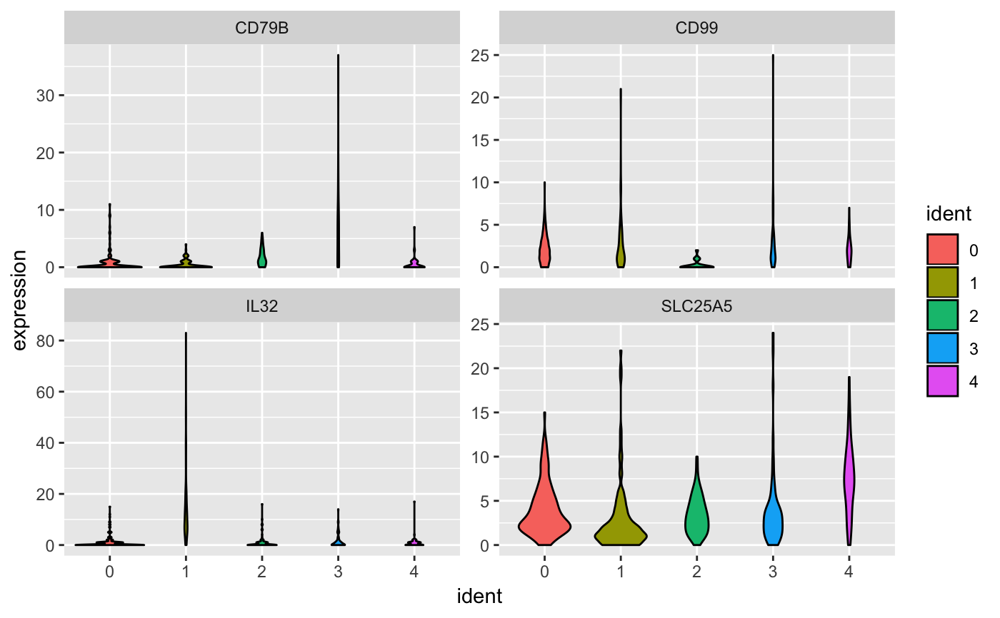

Plot Violin
Plot Violin
# S4 method for seurat plotViolin(object, genes, fill = viridis::scale_fill_viridis(discrete = TRUE), return = "grid", headerLevel = 2L)
Arguments
| object | Object. |
|---|---|
| genes | Gene identifiers to plot. |
| fill | Fill color palette. Defaults to viridis. |
| return | Return type. "grid", "list", and "markdown" are supported. |
| headerLevel | Markdown header level. Only applicable when
|
Examples
load(system.file("extdata/seurat.rda", package = "bcbioSingleCell")) genes <- slot(seurat, "raw.data") %>% rownames() %>% .[1:2] print(genes)#> ENSG00000000457 ENSG00000002586 #> "SCYL3" "CD99"# grid plotViolin(seurat, genes = genes, return = "grid")#> List of 2 #> $ SCYL3:List of 10 #> ..$ data :Classes 'grouped_df', 'tbl_df', 'tbl' and 'data.frame': 243 obs. of 4 variables: #> .. ..$ cell : chr [1:243] "M1_AAACACTA_CTTAGGTA" "M1_AAACACTA_CTTCGATT" "M1_AAACCGCC_GAGTTTCG" "M1_AAACCGCC_TAGCCTCG" ... #> .. ..$ ident : Factor w/ 4 levels "0","1","2","3": 1 2 2 4 3 2 4 1 2 3 ... #> .. ..$ gene : chr [1:243] "SCYL3" "SCYL3" "SCYL3" "SCYL3" ... #> .. ..$ expression: num [1:243] 0.958 2.52 2.823 2.711 2.413 ... #> .. ..- attr(*, "vars")= chr "gene" #> .. ..- attr(*, "drop")= logi TRUE #> .. ..- attr(*, "indices")=List of 1 #> .. ..- attr(*, "group_sizes")= int 243 #> .. ..- attr(*, "biggest_group_size")= int 243 #> .. ..- attr(*, "labels")='data.frame': 1 obs. of 1 variable: #> .. .. ..- attr(*, "vars")= chr "gene" #> .. .. ..- attr(*, "drop")= logi TRUE #> ..$ layers :List of 1 #> .. ..$ :Classes 'LayerInstance', 'Layer', 'ggproto' <ggproto object: Class LayerInstance, Layer> #> aes_params: list #> compute_aesthetics: function #> compute_geom_1: function #> compute_geom_2: function #> compute_position: function #> compute_statistic: function #> data: waiver #> draw_geom: function #> finish_statistics: function #> geom: <ggproto object: Class GeomViolin, Geom> #> aesthetics: function #> default_aes: uneval #> draw_group: function #> draw_key: function #> draw_layer: function #> draw_panel: function #> extra_params: na.rm #> handle_na: function #> non_missing_aes: #> optional_aes: #> parameters: function #> required_aes: x y #> setup_data: function #> use_defaults: function #> super: <ggproto object: Class Geom> #> geom_params: list #> inherit.aes: TRUE #> layer_data: function #> map_statistic: function #> mapping: NULL #> position: <ggproto object: Class PositionDodge, Position> #> compute_layer: function #> compute_panel: function #> required_aes: x #> setup_data: function #> setup_params: function #> width: NULL #> super: <ggproto object: Class Position> #> print: function #> show.legend: NA #> stat: <ggproto object: Class StatYdensity, Stat> #> aesthetics: function #> compute_group: function #> compute_layer: function #> compute_panel: function #> default_aes: uneval #> extra_params: na.rm #> finish_layer: function #> non_missing_aes: weight #> parameters: function #> required_aes: x y #> retransform: TRUE #> setup_data: function #> setup_params: function #> super: <ggproto object: Class Stat> #> stat_params: list #> subset: NULL #> super: <ggproto object: Class Layer> #> ..$ scales :Classes 'ScalesList', 'ggproto' <ggproto object: Class ScalesList> #> add: function #> clone: function #> find: function #> get_scales: function #> has_scale: function #> input: function #> n: function #> non_position_scales: function #> scales: list #> super: <ggproto object: Class ScalesList> #> ..$ mapping :List of 3 #> .. ..$ fill: symbol ident #> .. ..$ x : symbol ident #> .. ..$ y : symbol expression #> ..$ theme : list() #> ..$ coordinates:Classes 'CoordCartesian', 'Coord', 'ggproto' <ggproto object: Class CoordCartesian, Coord> #> aspect: function #> distance: function #> expand: TRUE #> is_linear: function #> labels: function #> limits: list #> range: function #> render_axis_h: function #> render_axis_v: function #> render_bg: function #> render_fg: function #> train: function #> transform: function #> super: <ggproto object: Class CoordCartesian, Coord> #> ..$ facet :Classes 'FacetNull', 'Facet', 'ggproto' <ggproto object: Class FacetNull, Facet> #> compute_layout: function #> draw_back: function #> draw_front: function #> draw_labels: function #> draw_panels: function #> finish_data: function #> init_scales: function #> map: function #> map_data: function #> params: list #> render_back: function #> render_front: function #> render_panels: function #> setup_data: function #> setup_params: function #> shrink: TRUE #> train: function #> train_positions: function #> train_scales: function #> vars: function #> super: <ggproto object: Class FacetNull, Facet> #> ..$ plot_env :<environment: 0x14a70e8d8> #> ..$ labels :List of 4 #> .. ..$ title: chr "SCYL3" #> .. ..$ fill : chr "ident" #> .. ..$ x : chr "ident" #> .. ..$ y : chr "expression" #> ..$ guides :List of 1 #> .. ..$ fill: logi FALSE #> ..- attr(*, "class")= chr [1:2] "gg" "ggplot" #> $ CD99 :List of 10 #> ..$ data :Classes 'grouped_df', 'tbl_df', 'tbl' and 'data.frame': 243 obs. of 4 variables: #> .. ..$ cell : chr [1:243] "M1_AAACACTA_CTTAGGTA" "M1_AAACACTA_CTTCGATT" "M1_AAACCGCC_GAGTTTCG" "M1_AAACCGCC_TAGCCTCG" ... #> .. ..$ ident : Factor w/ 4 levels "0","1","2","3": 1 2 2 4 3 2 4 1 2 3 ... #> .. ..$ gene : chr [1:243] "CD99" "CD99" "CD99" "CD99" ... #> .. ..$ expression: num [1:243] 1.762 0.713 0 1.737 1.96 ... #> .. ..- attr(*, "vars")= chr "gene" #> .. ..- attr(*, "drop")= logi TRUE #> .. ..- attr(*, "indices")=List of 1 #> .. ..- attr(*, "group_sizes")= int 243 #> .. ..- attr(*, "biggest_group_size")= int 243 #> .. ..- attr(*, "labels")='data.frame': 1 obs. of 1 variable: #> .. .. ..- attr(*, "vars")= chr "gene" #> .. .. ..- attr(*, "drop")= logi TRUE #> ..$ layers :List of 1 #> .. ..$ :Classes 'LayerInstance', 'Layer', 'ggproto' <ggproto object: Class LayerInstance, Layer> #> aes_params: list #> compute_aesthetics: function #> compute_geom_1: function #> compute_geom_2: function #> compute_position: function #> compute_statistic: function #> data: waiver #> draw_geom: function #> finish_statistics: function #> geom: <ggproto object: Class GeomViolin, Geom> #> aesthetics: function #> default_aes: uneval #> draw_group: function #> draw_key: function #> draw_layer: function #> draw_panel: function #> extra_params: na.rm #> handle_na: function #> non_missing_aes: #> optional_aes: #> parameters: function #> required_aes: x y #> setup_data: function #> use_defaults: function #> super: <ggproto object: Class Geom> #> geom_params: list #> inherit.aes: TRUE #> layer_data: function #> map_statistic: function #> mapping: NULL #> position: <ggproto object: Class PositionDodge, Position> #> compute_layer: function #> compute_panel: function #> required_aes: x #> setup_data: function #> setup_params: function #> width: NULL #> super: <ggproto object: Class Position> #> print: function #> show.legend: NA #> stat: <ggproto object: Class StatYdensity, Stat> #> aesthetics: function #> compute_group: function #> compute_layer: function #> compute_panel: function #> default_aes: uneval #> extra_params: na.rm #> finish_layer: function #> non_missing_aes: weight #> parameters: function #> required_aes: x y #> retransform: TRUE #> setup_data: function #> setup_params: function #> super: <ggproto object: Class Stat> #> stat_params: list #> subset: NULL #> super: <ggproto object: Class Layer> #> ..$ scales :Classes 'ScalesList', 'ggproto' <ggproto object: Class ScalesList> #> add: function #> clone: function #> find: function #> get_scales: function #> has_scale: function #> input: function #> n: function #> non_position_scales: function #> scales: list #> super: <ggproto object: Class ScalesList> #> ..$ mapping :List of 3 #> .. ..$ fill: symbol ident #> .. ..$ x : symbol ident #> .. ..$ y : symbol expression #> ..$ theme : list() #> ..$ coordinates:Classes 'CoordCartesian', 'Coord', 'ggproto' <ggproto object: Class CoordCartesian, Coord> #> aspect: function #> distance: function #> expand: TRUE #> is_linear: function #> labels: function #> limits: list #> range: function #> render_axis_h: function #> render_axis_v: function #> render_bg: function #> render_fg: function #> train: function #> transform: function #> super: <ggproto object: Class CoordCartesian, Coord> #> ..$ facet :Classes 'FacetNull', 'Facet', 'ggproto' <ggproto object: Class FacetNull, Facet> #> compute_layout: function #> draw_back: function #> draw_front: function #> draw_labels: function #> draw_panels: function #> finish_data: function #> init_scales: function #> map: function #> map_data: function #> params: list #> render_back: function #> render_front: function #> render_panels: function #> setup_data: function #> setup_params: function #> shrink: TRUE #> train: function #> train_positions: function #> train_scales: function #> vars: function #> super: <ggproto object: Class FacetNull, Facet> #> ..$ plot_env :<environment: 0x130559ee8> #> ..$ labels :List of 4 #> .. ..$ title: chr "CD99" #> .. ..$ fill : chr "ident" #> .. ..$ x : chr "ident" #> .. ..$ y : chr "expression" #> ..$ guides :List of 1 #> .. ..$ fill: logi FALSE #> ..- attr(*, "class")= chr [1:2] "gg" "ggplot"# markdown plotViolin(seurat, genes = genes, return = "markdown")#> #> #> ## SCYL3 #>#> #> #> ## CD99 #>